PRÁCTICA 02 Señales en tiempo continuo
Contents
Integrantes
- Cuevas Morales Saúl Asís
- Gonzalez Zúñiga Alexis Bryan
- Méndez Pallares Josué
- Vallejo Camarillo Moisés Eduardo
Objetivos
- Manipulación básica de MATLAB.
- Gráficas de señales reales y complejas continuas.
- Transformación de señales continuas (escalamientos y traslaciones).
- Cálculo de energía y potencia de señales continuas.
Introducción
Historia de Matlab:
Cleve Moler fue profesor de matemáticas y ciencias de la computación en la Universidad de Nuevo México cuando desarrolló la primera versión de Matlab. Moler quería que sus estudiantes tuvieran acceso al software de la matriz Linpack y EISPACK sin tener que utilizar el lenguaje de programación Fortran, el cual es complejo. Él vino para arriba con el sistema Matlab para resolver este problema. El lenguaje fue diseñado específicamente para manejar cálculos con matrices y las matemáticas, dijo en una entrevista con " Computerworld".
Moler trató de encontrar algunos de los usos comerciales de Matlab en la década de 1970 y principios de 1980, sin éxito. Poco después conoció a Jack Little, quien vio posibilidades de Matlab en el mercado, particularmente en relación a los problemas de ingeniería. Moler y pequeños MathWorks co - fundada en 1984 para buscar oportunidades de negocio con Matlab. Poco sirvió como presidente de la compañía, pero Moler no funcionó en la empresa en un primer momento. Steve Bangert era programador en jefe de la empresa en el inicio. Moler unió a la compañía en 1989 después de que había comenzado a crecer y generar importantes ingresos.
MathWorks se desarrolló rápidamente, entre las principales novedades en el camino, la compañía tuvo éxito en encontrar la manera de hacer Matlab disponible en todos los equipos en el mercado en la década de 1980. La compañía también añadió características gráficas y trazado de Matlab, temprano en la existencia MathWorks, que fue " uno de los aspectos más importantes de su popularidad”. En 2010, MathWorks tenían $ 600 millones en ingresos, con más de la mitad procedentes de fuera de los Estados Unidos.
Aunque Moler comenzó Matlab, el lenguaje en última instancia resultó influyente en una amplia gama de campos. En particular, Moler dijo, “poco se volvió Matlab en un lenguaje de programación amplia, con amplias implicaciones”. Finalmente, Matlab comenzó a ser utilizado en áreas tan variadas como los automóviles, los aviones, los audífonos, teléfonos celulares, los precios de derivados financieros y académicos. En el momento de la publicación, 1400 libros Matlab basados habían sido escritos en 28 idiomas.
Python:
Python es un lenguaje de scripting independiente de plataforma y orientado a objetos, preparado para realizar cualquier tipo de programa, desde aplicaciones Windows a servidores de red o incluso, páginas web. Es un lenguaje interpretado, lo que significa que no se necesita compilar el código fuente para poder ejecutarlo, lo que ofrece ventajas como la rapidez de desarrollo e inconvenientes como una menor velocidad. En los últimos años el lenguaje se ha hecho muy popular, gracias a varias razones como:
- La cantidad de librerías que contiene, tipos de datos y funciones incorporadas en el propio lenguaje, que ayudan a realizar muchas tareas habituales sin necesidad de tener que programarlas desde cero.
- La sencillez y velocidad con la que se crean los programas. Un programa en Python puede tener de 3 a 5 líneas de código menos que su equivalente en Java o C.
- La cantidad de plataformas en las que podemos desarrollar, como Unix, Windows, OS/2, Mac, Amiga y otros.
- Además, Python es gratuito, incluso para propósitos empresariales.
Octave:
Octave o GNU Octave es un programa libre para realizar cálculos numéricos. Como indica su nombre es parte de proyecto GNU. MATLAB es considerado su equivalente comercial. Entre varias características que comparten se puede destacar que ambos ofrecen un intérprete permitiendo ejecutar órdenes en modo interactivo. Nótese que Octave no es un sistema de álgebra computacional como podría ser Maxima, sino que usa un lenguaje que está orientado al análisis numérico. El proyecto fue creado alrededor del año 1988 pero con una finalidad diferente: Ser utilizado en un curso de diseño de reactores químicos. Posteriormente en el año 1992, se decide extenderlo y comienza su desarrollo a cargo de John W. Eaton. La primera versión alpha fue lanzada el 4 de enero de 1993. Un año más tarde, el 17 de febrero de 1994 aparece la versión 1.0. El nombre surge del nombre de un profesor de unos de los autores conocido por sus buenas aproximaciones por medio de cálculos mentales a problemas numéricos.
Desarrollo
Problema 1.
function [Fw] = fun1(a,w) Fw=a./(a.^2 + w.^2); return ; end
Problema 2.
Código:
w=-2:.0002:2; a=1; Fw=fun1(a,w); CFigure2(w,Fw );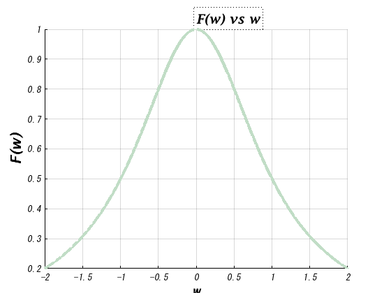
Problema 4.
M1.1
f = @(t) exp(-t).*cos(2*pi*t); t=0; f(t) t = (-2:2); f(t) plot(t,f(t)); xlabel('t'); ylabel('f(t)'); grid; t = (-2:0.01:2); figure; plot (t,f(t)); xlabel('t'); ylabel('f(t)'); grid;
ans =
1
ans =
7.3891 2.7183 1.0000 0.3679 0.1353
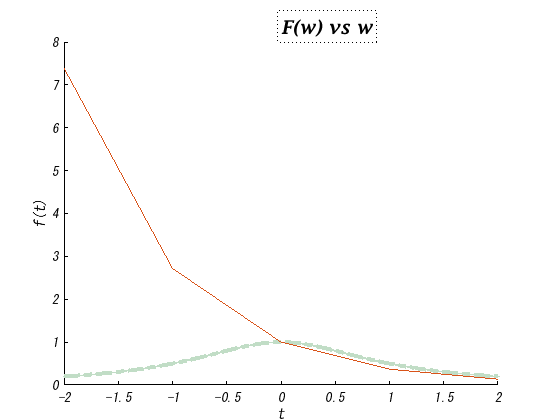 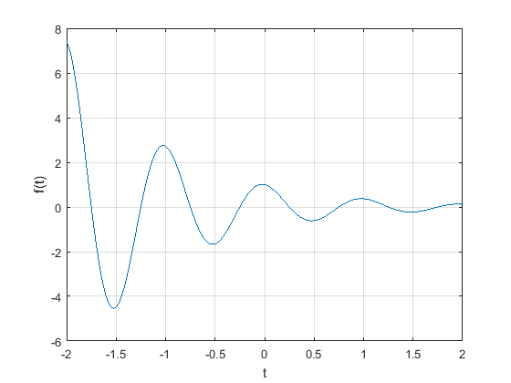 M1.2
u = @(t)t>=0; t = (-2:2); figure; plot (t,u(t)); xlabel('t'); ylabel('u(t)'); t = (-2:0.01:2); figure; plot (t,u(t)); xlabel('t'); ylabel('u(t)'); p = @(t) t>=0 & t<1; t = (-1:0.01:2); plot(t,p(t)); xlabel('t'); ylabel('p(t) = u(t)-u(t-1)'); axis ([-1 2 -.1 1.1]);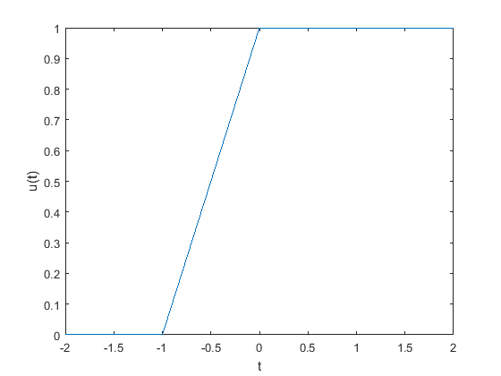 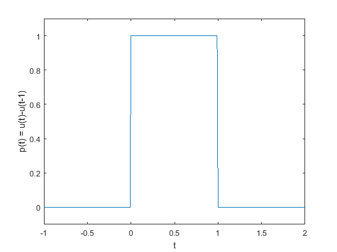
M1.3
g = @(t) exp(-t).*cos(2*pi*t).*(t>=0); t = (-2:0.01:2); figure; plot(t,g(2*t+1)); xlabel('t'); ylabel('g(2t+1)'); grid; figure; plot(t,g(-t+1)); xlabel('t'); ylabel('g(-t+1)'); grid; figure; plot(t,g(2*t+1) +g(-t+1)); xlabel('t'); ylabel('h(t)'); grid;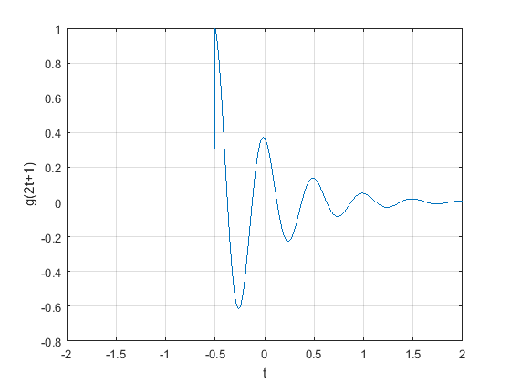 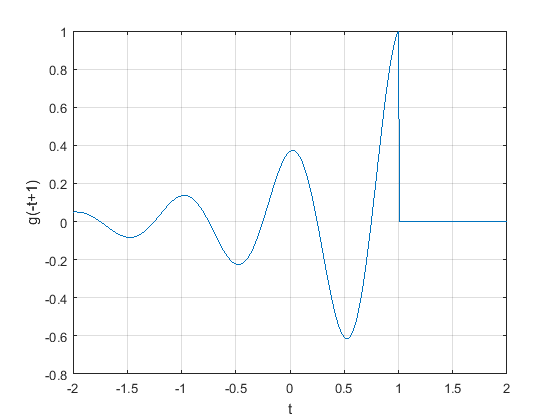 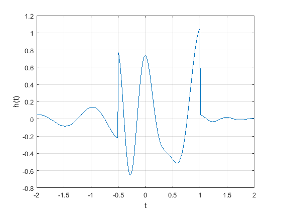
M1.4
x = @(t) exp(-t).*((t>=0)&(t<1)); t = (0:0.01:1); E_x =sum(x(t).*x(t)*0.01) x_squared = @(t) exp(-2*t).*((t>=0)&(t>1)); E_x = integral(x_squared,0,1) g_squared = @(t) exp(-2*t).*(cos(2*pi*t).^2).*(t>=0); t = (0:0.001:100); E_g = sum(g_squared(t)*0.001) E_g = integral(g_squared, 0,100)
E_x =
0.4367
E_x =
0
E_g =
0.2567
E_g =
0.2562
Problema 5.
u = @(t) (t>=0) x = @(t) (-t.*(u(t+4)-u(t)))+(t.*(u(t)-u(t-2))) n = -10:.001:10; figure; plot(n,x(n)); xlabel('t'); ylabel('f(t)'); grid on; % a x(t-4) figure; subplot(2,3,1) plot(n,x(n-4)); xlabel('t'); ylabel('f(t-4)'); grid; % a x(t/1.5) subplot(2,3,2) plot(n, x(n/1.5)); xlabel('t'); ylabel('f(t/1.5)'); grid; % a x(-t) subplot(2,3,3) plot(n, x(-n)); xlabel('t'); ylabel('f(-t)'); grid; % a x(2t-4) subplot(2,3,4) plot(n, x((2*n)-4)); xlabel('t'); ylabel('f(2t-4)'); grid; % a x(2-t) subplot(2,3,6) plot(n, x(2-n)); grid; xlabel('t'); ylabel('f(2-t)'); %
u =
function_handle with value:
@(t)(t>=0)
x =
function_handle with value:
@(t)(-t.*(u(t+4)-u(t)))+(t.*(u(t)-u(t-2)))
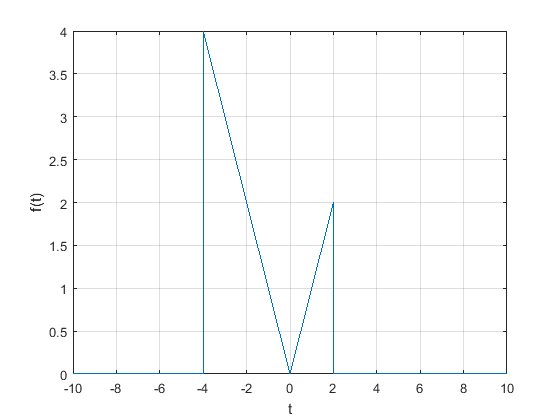 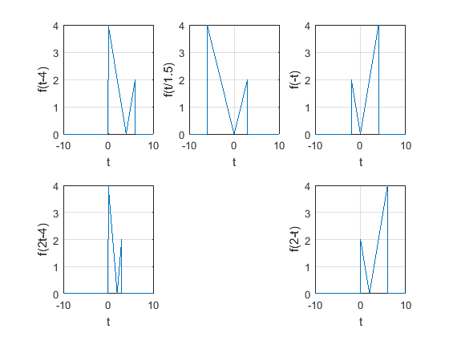 Problema 6.
t=-10:0.01:10; x= @(t) 1*((t>0) & (t<2)); y= @(t) 1*((t>0)&(t<1)) + (-1)*((t>1)&(t<2)); f= @(t) x(t)+y(t); g= @(t) x(t)-y(t); Ef=energia(f) figure plot(t,f(t)) Eg=energia(g) figure plot(t,g(t))
Ef =
4.0000
Eg =
0
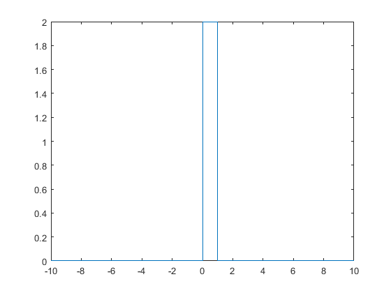 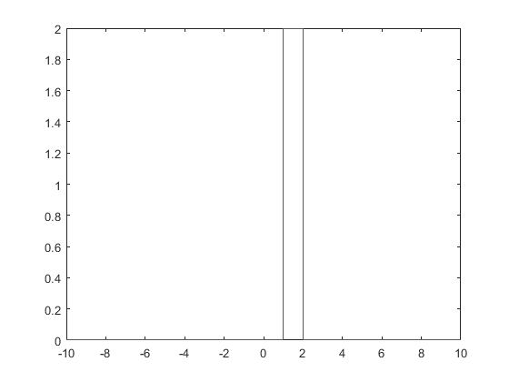 Problema 7.
%Resolviendo el problema 1.1.4 %La señal descrita es la siguiente x=@(t) t.^3.*((t>-2)&(t<2)); %Su potencia, calculándola con la fórmula 'potencia' antes desarrollada es: Ex=potencia(x) %a) %xa=@(t) -x(t); %Exa=potencia(xa); %rmsxa= sqrt(Exa) %b) %xb=@(t) 2*x(t); %Exb=potencia(xb); %rmsxb= sqrt(Exb) %c) xc=@(t) x(t); Exc=potencia(xc); rmsxc= sqrt(Exc); syms C rmsxc= rmsxc*C
Ex =
9.1429
rmsxc =
(8*7^(1/2)*C)/7
Apéndices
Código de la función CFigure2, que se ocupó en el Problema 2:
function createfigure1(X1, Y1) %CREATEFIGURE1(X1, Y1) % X1: vector of x data % Y1: vector of y data % Auto-generated by MATLAB on 11-Sep-2019 18:56:43 % Create figure figure1 = figure('Name','F(w) vs w',... 'Color',[0.992156862745098 0.917647058823529 0.796078431372549]); % Create axes axes1 = axes('Parent',figure1,'YGrid','on','XGrid','on',... 'Color',[0.972549021244049 0.972549021244049 0.972549021244049],... 'ZColor',[0 0 0],... 'YColor',[0 0 0],... 'XColor',[0 0 0],... 'FontAngle','italic',... 'FontName','MS Gothic',... 'Position',[0.114797297297298 0.0843415023849244 0.775 0.814999999999999],... 'AmbientLightColor',[0.945098039215686 0.968627450980392 0.949019607843137]); hold(axes1,'on'); % Create plot plot(X1,Y1,'ZDataSource','','MarkerSize',0.5,'Marker','x','LineWidth',3,... 'LineStyle','-.',... 'Color',[0.756862759590149 0.866666674613953 0.776470601558685]); % Create xlabel xlabel('w','FontWeight','bold','FontSize',16); % Create ylabel ylabel('F(w)','FontWeight','bold','FontSize',16,'FontName','Lucida Sans'); % Create title title('F(w) vs w','LineStyle',':','EdgeColor',[0 0 0],'FontSize',14,... 'FontName','Lucida Fax',... 'HorizontalAlignment','left'); end
Referencias
Conocimientos Informáticos. Historia de Matlab. Recuperado el 13 de Septiembre de 2019, Computer Información. Sitio Web: http://ordenador.wingwit.com/Programacion/computer-programming-languages/87495.html#.XXnUNm5FxPY
Miguel Angel Alvarez.(19 de November de 2003). Qué es Python. Recuperado el 13 de Septiembre de 2019, de DesarrolloWeb. Sitio Web: https://desarrolloweb.com/articulos/1325.php
IEEE_UCA.(2010). GNU Octave. Recuperado el 13 de Septiembre de 2019, de Rama Estudiantil IEEE-UCA. Sitio Web: http://ewh.ieee.org/sb/el_salvador/uca/octave.html
B. P. Lathi. (2005). Linear Systems and Signals. 198 Madison Avenue, New York, New York 10016: Oxford University Press.